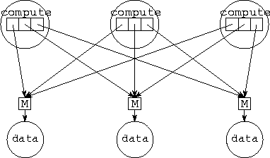

![[DBPP]](pictures//asm_color_tiny.gif)


![[Search]](pictures//search_motif.gif)
Programs 6.13 and 6.14 sketch an FM
implementation of the parallel Fock matrix construction algorithm of
Section 2.8. Recall that in this algorithm,
P
computation tasks must be able to read and write two large distributed
data structures. This capability is achieved by encapsulating these
data structures in separate data tasks. Each computation task
repeatedly generates requests for data values and then performs
computation. The FM program implements computation and data tasks as
compute and data processes, respectively, and connects
these processes using a many-to-many communication structure, as
illustrated in Figure 6.10. This structure uses P
mergers to link P P outports ( To) with P
inports ( Ti). Each process is given an array of P
outports, one connected to each merger. In
Programs 6.13 and 6.14, P=128,
and 1024 data values are allocated to P data tasks in a
blocked fashion.
P outports ( To) with P
inports ( Ti). Each process is given an array of P
outports, one connected to each merger. In
Programs 6.13 and 6.14, P=128,
and 1024 data values are allocated to P data tasks in a
blocked fashion.

Figure 6.10: FM implementation of the Fock matrix problem, with P=3.
Each of the P compute processes has an array of P
outports connected via mergers with P data
processes.
For brevity, the FM programs presented here implement only an accumulate operation. A compute process wanting to accumulate a value to address addr sends a message containing an offset (the integer mod(addr,ND)) and the value to be accumulated (a real) on outport number addr/ND. Notice that the compute and data processes are similar in structure to the manager and worker of Program 6.5.
© Copyright 1995 by Ian Foster